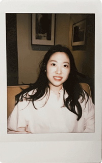

About me

Hello! My name is Inhye Yoon. I'm a UX/UI designer with a strong belief that design should always serve with purpose and reason. My goal is to become a designer who can empathize with end users when designing any service or product. To achieve this goal, I'm currently studying UI/UX design and Front-end Web Development at BCIT and set to graduate in November 2023.
In my free time, I love walking in the park, collecting cute postcards, enjoying desserts, watching relaxing movies and dramas, and setting goals while journaling about my experiences.
/ EXPERTISE
- User Experience Design
- User Interface Design
- Graphic Design
- Front-End Development
- Wireframes / Prototyping
- Figma / Xd
- WordPress
- Photoshop / Illustrator / Indesign
- After Effect / Premiere Pro
- HTML / CSS / JavaScript
/ SYNONYMS
- Creative
- Optimistic
- Responsible
- Considerate
- Curious
- Empathy